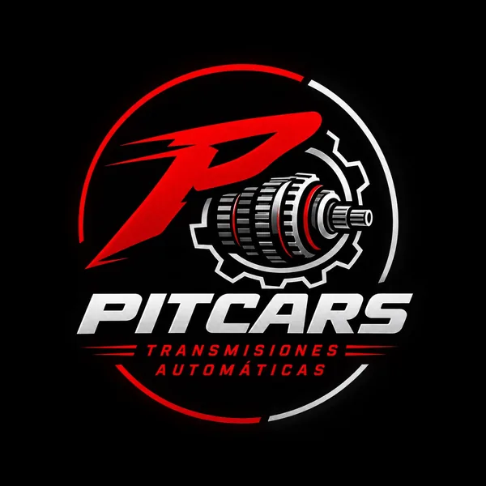
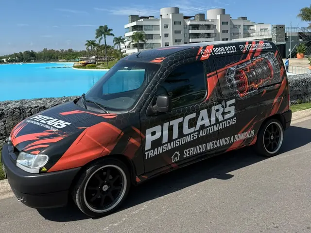
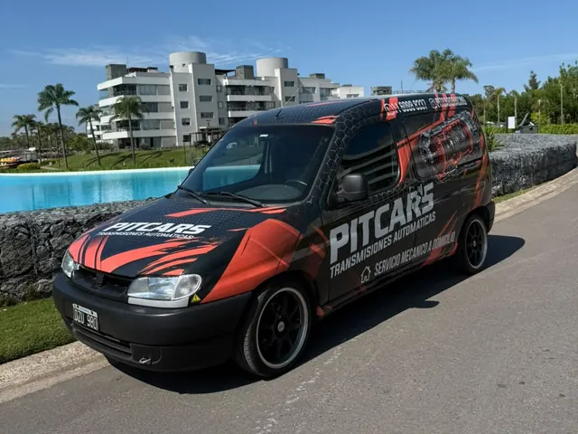
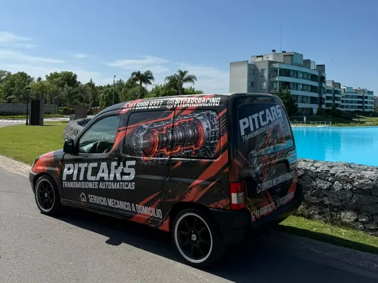

Cambios bruscos
Puede ser aceite degradado, un solenoide con falla o desgaste interno. Si se atiende a tiempo, muchas veces se resuelve con service y ajuste.
Consultar este casoService y reparación con más de 30 años de experiencia. Si tu caja falla, escribime y coordinamos lo antes posible. Service de caja, frenos y tren delantero, los hago a domicilio.

En Pitcars hago diagnóstico, service y reparación de cajas automáticas para autos y camionetas de Pilar y alrededores. Uso scanner para leer los códigos de falla y te explico qué tiene el auto antes de arreglarlo.
El service de la caja, los frenos y el tren delantero los hago a domicilio: voy hasta donde estás, sin que tengas que mover el auto.
Elegí el síntoma que más se parece. Te cuento qué suele ser y cómo seguimos.
Puede ser aceite degradado, un solenoide con falla o desgaste interno. Si se atiende a tiempo, muchas veces se resuelve con service y ajuste.
Consultar este casoSuele indicar nivel bajo de aceite, embragues desgastados o presión insuficiente. Conviene no seguir manejando: puede agravarse.
Consultar este casoPuede ser el selector, un sensor, un solenoide o un problema interno. Necesita diagnóstico con scanner.
Consultar este casoRetenes, juntas o el cárter pueden ser la causa. Las pérdidas pequeñas se arreglan rápido y evitan una reparación mucho mayor.
Consultar este casoLa caja se protege quedando en una sola marcha. Hay que leer los códigos de falla antes de seguir usándola.
Consultar este casoGolpes en pozos, volante que vibra o chirrido al frenar: voy a domicilio a revisarlo.
Consultar este casoLlego en mi camioneta a donde estés, en toda la zona de Pilar.



Sí, y lo hago a domicilio. Incluye diagnóstico con scanner, cambio de aceite y filtro, y limpieza. Escribime con marca, modelo y año del auto.
Sí. El service de la caja automática, los frenos y el tren delantero los hago en tu casa, en toda la zona de Pilar. Para otras reparaciones de la caja, escribime y te cuento cómo seguimos.
Mandame un WhatsApp con el síntoma, la marca y el modelo, y si podés una foto o un audio. Te respondo lo antes posible.
Lo mejor es no seguir manejando: una falla chica puede volverse una reparación grande. Escribime lo antes posible para revisarlo.
Depende del modelo y del uso: el manual del fabricante marca el intervalo. Si el auto trabaja mucho en tráfico o con carga, conviene adelantarlo. Escribime con tu marca y modelo y te oriento.
Si el auto revoluciona pero no avanza, cambia de forma brusca o no engancha una marcha, suele ser la caja. Con el scanner se leen los códigos de falla y se confirma.
Escribime por WhatsApp con una foto o un audio del problema. Respondo lo antes posible.
Atiendo de lunes a viernes de 9 a 19 h y los sábados hasta las 14 h.